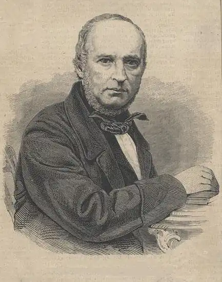

13 серпня 1803 — 11 березня 1869
князь — російський письменник, філософ, педагог, музикознавець і теоретик музики
Був останнім представником однієї з найстаріших гілок роду Рюриковичів. Його батько Федір Сергійович (рідний брат І. С. Одоєвського) походив по прямій лінії від чернігівського князя Михайла Всеволодовича, замученого в 1246 році в Орді і зарахованого до лику святих. Мати Катерина Олексіївна (дівоче прізвище невідоме) з кріпаків Залишившись сиротою в ранньому віці, виховувався в будинку опікуна, двоюрідного дядька по батьківській лінії, генерала Дмитра Андрійовича Закревського. МОСКОВСЬКИЙ ПЕРІОД Зазвичай життя і творчість Одоєвського ділиться на три періоди , межі між якими більш-менш збігаються з його переїздами з Москви до Петербурга і назад. Перший період відноситься до життя в Москві, в маленькій квартирі в газетному провулку. Одоєвський тоді вчився в Московському університетському благородному пансіоні (1816-1822). Там на його квартирі збирався гурток "Суспільство любомудрія", створений під впливом шеллінгіанской ідей викладали в пансіоні професорів Московського університету М. Г. Павлова і Д. М. Велланського. Серед постійних членів цього гуртка були А. І. Кошелев, Д. В. Веневітінов, І. В. та П. В. Киреєвські, В. К. Кюхельбекер. Регулярно відвідували засідання А. С. Хомяков, М. П. Погодін і В. Г. Бєлінський. Велике вляніе на світогляд зробила дружба з двоюрідним братом А. І. Одоєвським. Як він зізнався вЩоденнику студента(1820-1821), "Олександр було епохою в моєму житті". Розквіт діяльності гуртка припав на 1823-1825 рр.. і завершився його ліквідацією після повстання декабристів. У ті ж роки Одоєвський пробує свої сили на літературній ниві: разом з Кюхельбекер видає альманах "Мнемозина" і пише роман "Ієронім Бруно і П'єтро Аретіно", що залишився не завершеним. У 1826 році він одружився, вступив на службу у відомство іноземних сповідань і переїхав до Санкт-Петербурга. ТВОРЧІСТЬ ПЕТЕРБУРЗЬКОГО ПЕРІОДУ Для другого періоду у творчості Одоєвського характерно захоплення містичними вченнями, перш за все містичною філософією Сен-Мартена, середньовічної натуральної магією і алхімією. Він активно займається літературною творчістю. Пише романтичні та дидактичні повісті, казки, публіцистичні статті, співпрацює з пушкінським "Сучасником", "Вісник Європи" кількома енциклопедіями. Редагував "Журнал Міністерства Внутрішніх справ". У 1846 році був призначений помічником директора Імператорської публічної бібліотеки та директором Румянцевського музею. До цього ж часу відноситься і краще, за загальним визнанням, з його творів — збірка філософських есе і оповідань під загальною назвою "Російські ночі" (1844), даних у формі філософської бесіди між кількома молодими людьми. Сюди вплетені, наприклад, оповідання "Остання самогубство" і "Місто без імені", описують фантастичні наслідки, до яких призводить реалізація закону Мальтуса про зростання населення в геометричній прогресії, а творів природи — в арифметичній, і теорії Бентама, що кладе в основу всіх людських дій виключно початок корисного, як мета і як рушійну силу. Позбавлена ??внутрішнього змісту, замкнута в лицемірну умовність світське життя знаходить собі живу і яскраву оцінку в "Глум Мерця" і особливо в патетичних сторінках "Балу" і описі жаху перед смертю випробовується зібралася на балу публікою. Приблизно до цього ж часу належить участь Одоєвського в гуртку Бєлінського, підготовка тритомника зібрання творів, також побачив світ у 1844 році і залишається до цих пір не перевидають. Тоді ж у 1840-і гг.Одоевскій поступово змінює свій світогляд: він розчаровується в містицизмі, визнає новоєвропейського природознавства і починає активно пропагувати ідеали народної освіти. Найбільшу активність він розвиває на цьому поприщі вже після повернення до Москви у 1861 р., куди він приїжджає разом з Румянцевском музеєм і на чолі його. Одночасно він був призначений сенатором московських департаментів сенату, де перебував до самої смерті. ТЕОРІЯ МУЗИКИ І МУЗИЧНА ПРАКТИКА За спогадами сучасників, інтерес до музики в Одоєвського прокинувся ще в ранній юності. Навіть у його маленькій квартирці в газетному провулку розміщувався невеликий кабінетне фортепіано. Особливо його приваблювала музична теорія і, перш за все, теорія темперації. Незастосування рівномірно темперованого хроматичної гами, використовуваної в класичній музиці, для відтворення застосовувалися в народній музичній практиці музичних ладів стала очевидною йому, коли він записував з голосу народні наспіви. Це відкриття, зроблене, мабуть, в кінці 1840-х рр.. в значній мірі визначило напрям його подальших вишукувань і довело йому дієвість методів експериментальної науки нового часу. Від народної музики Одоєвський перейшов до дослідження древніх церковних ладів. Він зрозумів, що і тут традиція не вкладається в рамки, що задаються рівномірної темперації, і став вивчати можливості енгармонічні музичних інструментів. Результати цих досліджень знайшли своє відображення у серії статей ("Російська і так звана загальна музика", "Про споконвічної великоруської пісні", мова до відкриття Московської консерваторії "Про вивчення російської музики не тільки як мистецтва, але і як науки", "Музична грамота або засади музики для немузикантов "," Музика з точки зору акустики "). Почасти Одоєвський зміг втілити їх у створений ним "енгармонічні клавіціне". ЕНГАРМОНІЧНІ КЛАВІЦІН Цей інструмент був замовлений у майстра німецького походження А. Кампе, що проживав в Москві і містив у газетному провулку фортепіанну фабрику, яка перейшла в кінці століття до його дочки, в заміжжі Смолянинової. В архіві збереглася розписка від 11 лютого 1864 про виплату 300 рублів сріблом за виготовлення інструменту. Хоча Одоєвський називав його "клавіціном", це було стандартне молоточкові фортепіано, з тією лише відмінністю, що кожна його чорна клавіша ділилася надвоє, крім того у нього було по одній чорної клавіші там, де зазвичай їх немає — міжсіідота міжмиіфа. Цей інструмент зберігається нині в Музеї музичної культури ім. Глінки в Москві. ГРОМАДСЬКА ДІЯЛЬНІСТЬ Крім невтомній діяльності по збиранню, збереженню та реставрації російської музичної спадщини, — перш за все в тому, що стосується православної церковної музики, Одоєвський не шкодував сил і на деяких інших теренах. Однією з видатних сторін його літературної діяльності була турбота про освіту народу, у здатності й добрі духовні властивості якого він пристрасно вірив. Довгі роки він складався редактором "Сільського Огляду", що видавався міністерством внутрішніх справ; разом з одним своїм, А. П. Заблоцкий-Десятовский, випустив у світ книжки "Сільського читання", в 20 тисячах примірників, під заголовками: "Що селянин Наум твердив дітям і з приводу картоплі "," Що таке креслення землі і на що це придатне "(історія, значення і способи межування) і т. д.; написав для народного читання ряд" Грамоток дідуся Іринея "— про газ, залізницях, поросі , повальних хвороби, про те, "що навколо людини і що в ньому самому", — і, нарешті, видав "Строкаті казки Іринея Гамозейкі", написані мовою, якою захоплювався знавець російської мови Даль, що знаходив, що деяким з придуманих Одоєвським приказок і прислів'їв може бути приписано чисто народне походження (наприклад "дружно не важко, а нарізно хоч кинь"; "дві головні та в чистому полі димлять, а одна і на припічку гасне" ...). Його клопотам зобов'язані були своїм дозволом "Вітчизняні записки". Вітаючи полегшення цензурних правил в 1865 р., Одоєвський наполегливо висловлювався проти взятої з наполеонівської Франції системи застережень і ратував за скасування безумовного заборони ввезення в Росію ворожих їй книг. Перетворення Олександра II, що поновили російську життя , зустріли в Одоєвському захоплене співчуття. Він пропонував вважати в Росії новий рік з 19 лютого і завжди, у колі друзів, урочисто святкував "великий перший день" вільної праці ", як він сам висловився у вірші, написаному після читання маніфесту про скасування кріпосного права. Коли в 1865 р. в газеті "Весть" була розміщена стаття, в якій проводився, під приводом упорядкування нашого державного устрою, проект дарування дворянству таких особливих переваг, які, по суті, були б відновленням кріпосного права, тільки в іншій формі, — князь Одоєвський написав гарячий протест, в якому, від імені багатьох його підписали, говорив, що завдання дворянства полягає в наступному: 1) докласти всі сили розуму і душі до усунення інших наслідків кріпосного стану, нині з Божою допомогою знищеного, але колишнього постійним джерелом нещасть для Росії і ганьбою для всього її дворянства; 2) вжити сумлінне і завзяте участь у діяльності нових земських установ і нового судочинства, і в діяльності цієї води брати ту досвідченість і знання справ земських і судових, без яких будь-яке установа залишилося б безплідним, за браком виконавців; 3) не поставляти собі метою себялюбівое охорону одних своїх станових інтересів, не шукати ворожнечі з іншими станами перед судом і законом, але дружно і сукупно з усіма вірнопідданими трудитися для слави Государя і користі всього вітчизни і 4) користуючись вищою освітою і великим достатком, вживати наявні кошти для поширення корисних знань у всіх верствах народу, з метою засвоїти йому успіхи наук і мистецтв, наскільки це можливо для дворянства ". З надзвичайною увагою стежив Одоєвський за розпочатої в 1866 році тюремної реформою і за введенням робіт в місцях ув'язнення, ще в "Російських ночах" вказавши на шкідливу бік виправно-каральних систем, заснованих на безумовному самоті і мовчанні. Оновлений суд знайшов у ньому гарячого поборника. "Суд присяжних, — писав він, — не тим добрий, що судить справедливіше і більш незалежним суддів чиновників. Дуже може статися, що розумний чиновник розсудить справу розумнішої і вирішить справедливіше, ніж присяжний неюристами ... Суд присяжних важливий тим, що наводить на здійснення ідеї правосуддя таких людей, які й не підозрювали необхідності такого здійснення; він виховує совість. Все, що є прекрасного і високого в англійських законах, судах, поліції, звичаї — все це виробилося судом присяжних, тобто можливістю для кожного бути коли-небудь безконтрольним суддею свого ближнього, але суддею привселюдно, під критикою громадської думки.